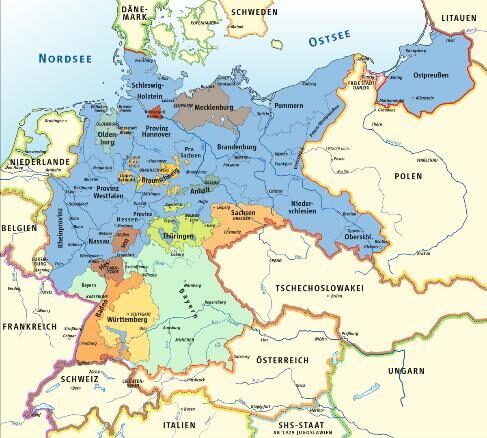
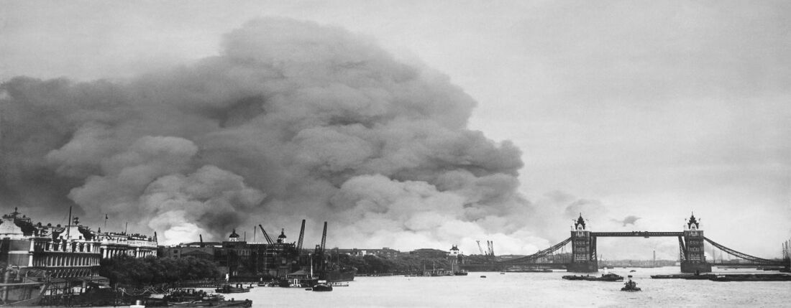
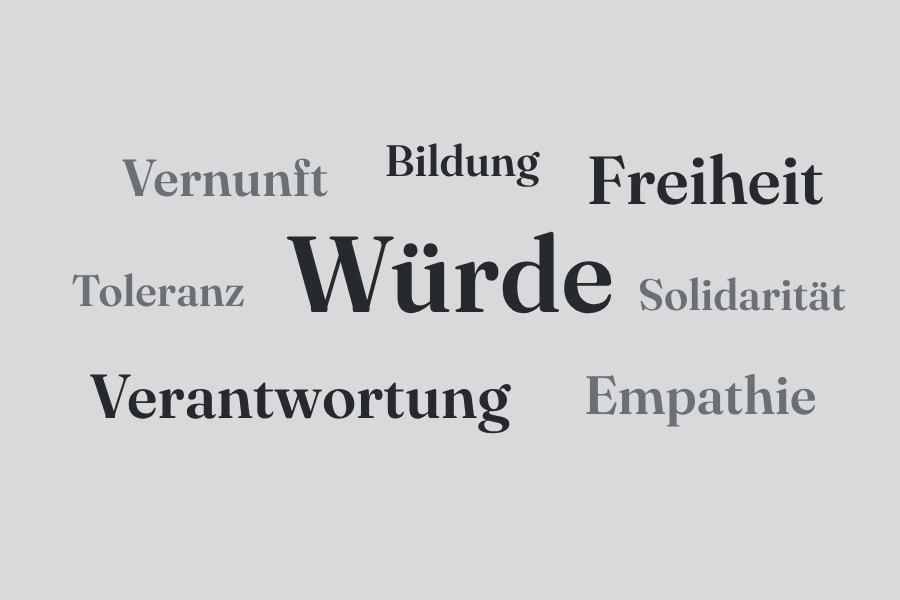
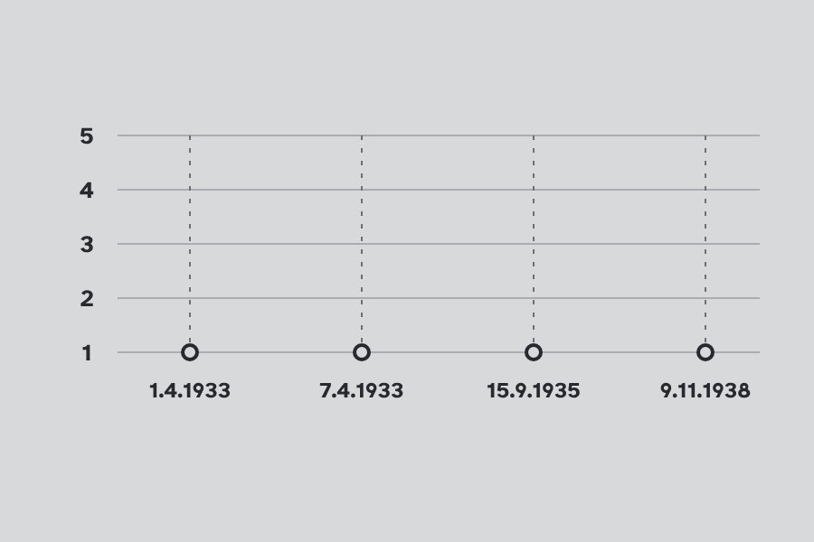
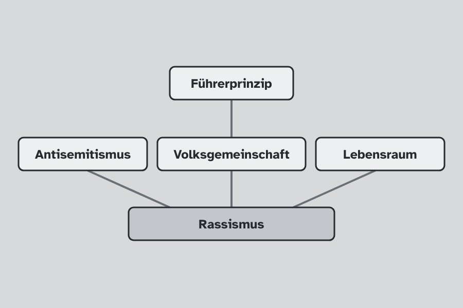

Retrospektivität
Wir betrachten die Vergangenheit immer im Nachhinein, aus der Gegenwart heraus.
Drei Zeitstrahlen von 1918 bis 1991 – untersucht mit der kognitiven Landkarte des Geschichtsunterrichts. In jedem Kapitel stehen zuerst die Daten, die du kennen solltest. Darunter liegen die Module in der Reihenfolge des Unterrichts.
1918 – 1933
Die erste deutsche Demokratie.
9. Nov. 1918 Ausrufung der Republik
11. Aug. 1919 Weimarer Verfassung
1923 Krisenjahr: Inflation, Hitlerputsch
Okt. 1929 Beginn der Weltwirtschaftskrise
Die Module zu diesem Kapitel entstehen gerade. Die Merkdaten stehen schon da.




1933 – 1945 und die Folgen · elf Module
Ideologie, Krieg und Menschheitsverbrechen – und die Frage, wer mitgemacht hat und was danach daraus wurde.
Bild 1 von 5: Karte aus dem Heft: das Deutsche Reich und seine Nachbarn (zu M19).
Tippe auf eine Karte oder auf einen Punkt der Leiste: Du siehst, wo du in der Zeit bist, und öffnest von dort das Modul.

Was macht den Menschen zum Menschen?30. Jan. 1933 Hitler wird Reichskanzler

Leben in der NS-Diktatur: Ausgrenzung 1933–193915. Sept. 1935 Nürnberger Gesetze

Die fünf Säulen der NS-Ideologie9. Nov. 1938 Novemberpogrome
Appeasement: Frieden oder Krieg?1. Sept. 1939 Überfall auf Polen
Der Verlauf des Zweiten Weltkriegs. Der Krieg und seine Dilemmata.22. Juni 1941 Überfall auf die Sowjetunion
 Die Shoa: Es geht um MenschenWie war das möglich? TäterforschungDie Shoa im Ländervergleich
Die Shoa: Es geht um MenschenWie war das möglich? TäterforschungDie Shoa im Ländervergleich8. Mai 1945 Bedingungslose Kapitulation
 Kriegsende 1945 – nach dem Modul von Offene Geschichte
Kriegsende 1945 – nach dem Modul von Offene Geschichte Globalgeschichte des Zweiten Weltkriegs
Globalgeschichte des Zweiten Weltkriegs


1945 – 1991 · neun Stunden
Welchen Einfluss hatten Ideologien, Machtinteressen und Handlungsspielräume der Akteure – und wie wird dieser Konflikt heute erinnert?
Bild 1 von 4: Potsdam, Sommer 1945 (Stunde 1).
Tippe auf eine Karte oder auf einen Punkt der Leiste: Du siehst, wo du in der Zeit bist, und öffnest von dort die Stunde.
2. Aug. 1945 Potsdamer Abkommen
„Stunde Null“ und Potsdamer Abkommen12. März 1947 Truman-Doktrin
 Truman-Doktrin und Zwei-Lager-Theorie
Truman-Doktrin und Zwei-Lager-Theorie24. Juni 1948 Beginn der Berlin-Blockade
Berlin-Blockade und sowjetische Zone1949 Zwei deutsche Staaten
 Doppelte Staatsgründung
Doppelte Staatsgründung Westbindung der Bundesrepublik
Westbindung der Bundesrepublik17. Juni 1953 Aufstand in der DDR
13. Aug. 1961 Bau der Berliner Mauer
Flucht aus der DDR und Mauerbau Der 17. Juni 1953 im Schulbuch
Der 17. Juni 1953 im Schulbuch Ostverträge
Ostverträge9. Nov. 1989 Öffnung der Mauer
Ende der DDR und des Ost-West-Konflikts3. Okt. 1990 Deutsche Einheit
Werkzeuge für alle neun Stunden:ZeitrasterOrdnenVernetzenGlossarRoter Faden
Die kognitive Landkarte nennt Prinzipien, nach denen Geschichte entsteht. Hier siehst du, in welchen Modulen du welches Prinzip übst – quer durch die Epochen.
Wir betrachten die Vergangenheit immer im Nachhinein, aus der Gegenwart heraus.
Jede Betrachtung erfolgt aus einer Sichtweise, geprägt von Überzeugungen, Interessen und Erfahrungen.
Historische Erkenntnisse sind immer nur Ausschnitte der gesamten Vergangenheit.
Noch kein Modul, das dieses Prinzip in den Mittelpunkt stellt.
Wer Geschichte erzählt, wählt aus: Welche Quellen, Ereignisse und Personen sind wichtig?
Quellen zeigen immer nur einen Teil der Vergangenheit, und nur ein Teil der Quellen ist erhalten.
Geschichte gibt es nur als Erzählung.
Geschichte wird nicht gefunden, sondern zusammengesetzt. Aus denselben Fakten können verschiedene Geschichten entstehen.
Wer Geschichte erzählt, ist durch seinen gesellschaftlichen und kulturellen Kontext geprägt, oft unbewusst.
Diese Module haben noch keinen eigenen Landkarten-Moment.
Kante links:NationalsozialismusOst-West-Konflikt